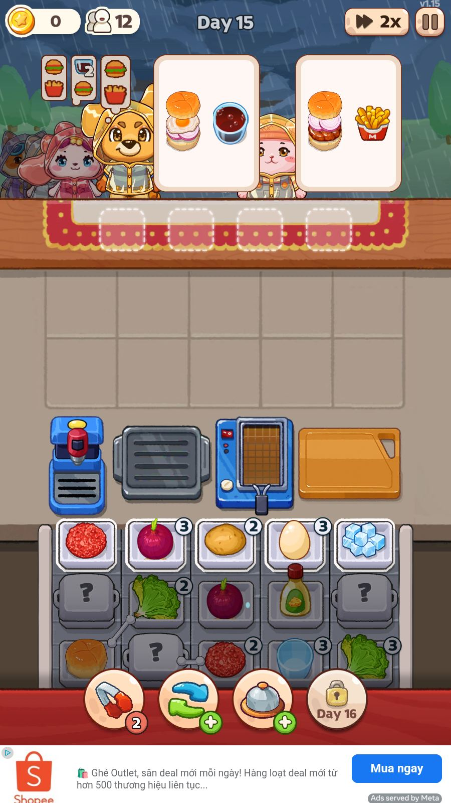
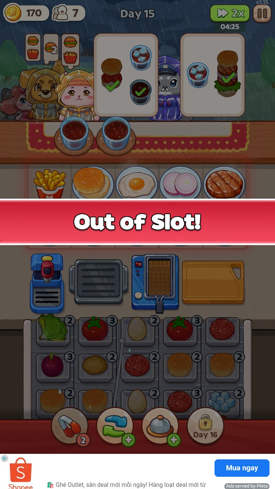
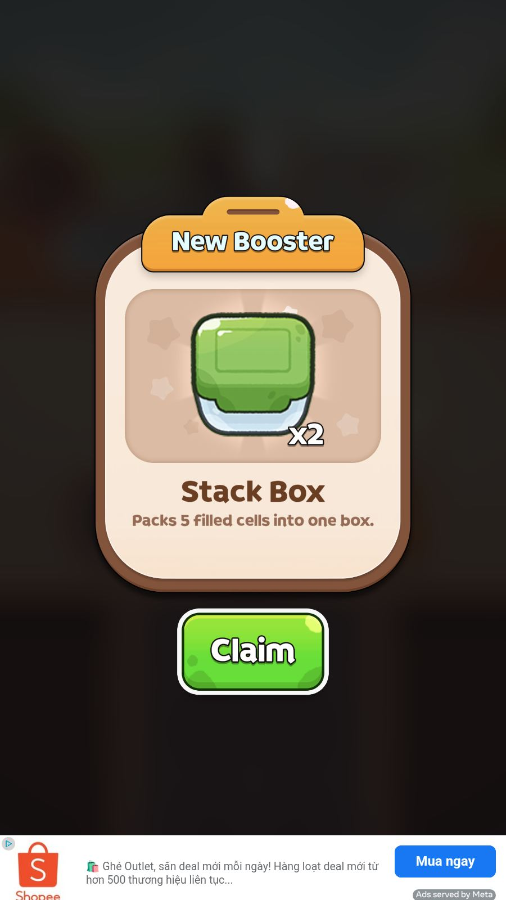
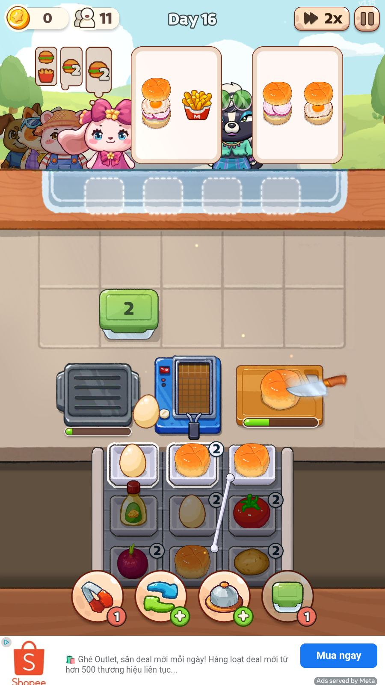
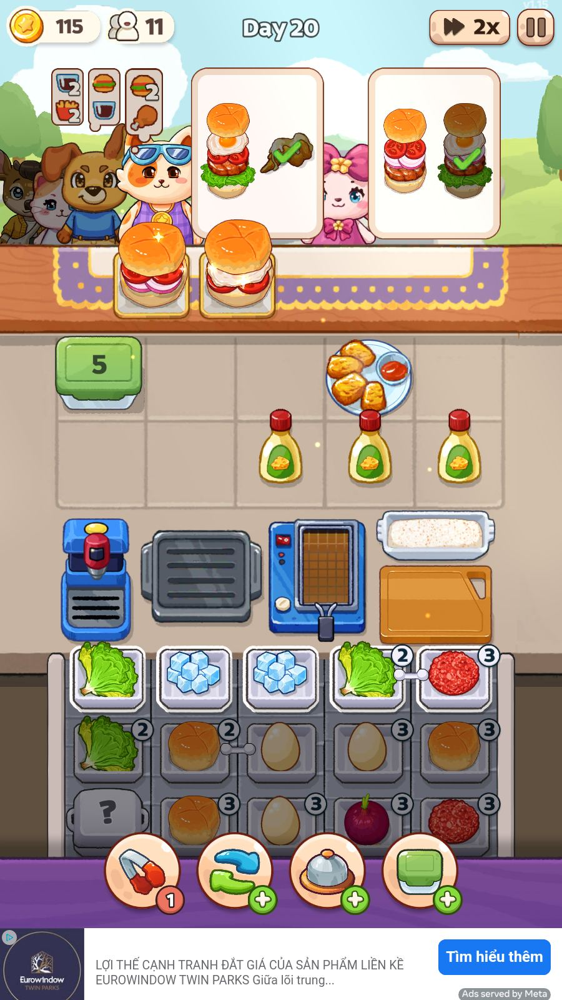

Booster trong màn
Mô tả
- 4 booster đang chạy: Tongs (nhặt tự do), Swap Row (đảo hàng nguyên liệu), Auto Cook (chuông, tự làm xong một đơn), Stack Box (gói 5 ô đầy vào một hộp). Mở dần theo Day: 3 / 9 / 12 / 16.
- Mỗi booster có số lượng trong kho (item pack). Hết thì mua lẻ bằng gem (600 / 500 / 600 / 700), mua gói x3 (1.600 / 1.600 / 1.600 / 1.800) hoặc xem quảng cáo thưởng.
- Mở khoá booster mới có popup "New Booster" tặng 2 cái và tutorial mũi tên "Try using this booster!" ép dùng thử một lần.
- Còn 2 booster có code nhưng tắt: Sweeper (
booster_clean_dirty) và Calm Customers (booster_refill_wait_time);MoreServeSlotschỉ còn là id.
Thiết kế chi tiết
Tóm tắt thiết kế
- APK 4 booster đang bật, mở Day 3 / 9 / 12 / 16. So với 1.11 (Day 3 / 9 / 12) 1.15 thêm Stack Box ở Day 16; Sweeper và Calm Customers có hàng config nhưng
enable=0. - Code Hàng config ghép với hiệu ứng theo chỉ số mảng (
boosterTypes= PickUp, Reorder, AutoMake, StackLeftCells), không theo tên. Đổi thứ tự trong RC sẽ đổi booster. - Playtest Mỗi booster có một cách giải bài khác nhau: Tongs lấy món ở sâu (cuộn thấy cả 5 cột), Swap Row đảo hàng, Stack Box gói 5 ô đầy thành 1 hộp có số, Auto Cook hoàn thành đơn.
- Playtest Mở booster mới là một khoảnh khắc: popup "New Booster" tặng x2, rồi tutorial tối màn hình ép bấm nút đó ("Try using this booster!").
- Code Hết số lượng thì có 3 đường: gem lẻ, gói x3 (rẻ hơn mua lẻ 3 lần với Tongs, Auto Cook và Stack Box: 1.600 so với 1.800, 1.800 so với 2.100; riêng Swap Row gói 1.600 đắt hơn 3 x 500 = 1.500), hoặc quảng cáo thưởng; xem quảng cáo mà không dùng được thì vẫn giữ lại (
booster_unused_ad_reward). - Live 16/11 Server không ghi đè
booster_config/booster_pack_config: mọi giá ở trên là mặc định APK và đang chạy thật.
Luồng người chơi từng bước
- Thanh booster dưới bàn chơiGiao diện PlaytestDay 15 có 3 booster dùng được (Tongs x2, Swap, Bell), Stack Box còn khoá "Day 16".

Day 15: thanh booster Tongs x2, Swap (+), Bell (+); Stack Box còn khoá tới Day 16 - Dùng TongsNgười chơi PlaytestChạm Tongs: camera cuộn xuống, chọn 1 ô bất kỳ trong 5 cột; kho 2 xuống 1. Timer khách bị giữ trong lúc chọn.Lưới đầy thì Tongs không có tác dụng.

Tongs: màn cuộn xuống hiện toàn bộ cột nguyên liệu, mọi ô viền trắng và chạm được - Dùng Swap RowNgười chơi PlaytestHàng thứ 2 được đưa lên hàng đầu; nút về "+" khi hết.

Swap Row: hàng nguyên liệu bị đảo, nút Swap về "+" (hết) - Mở khoá Stack Box ở Day 16Hệ thống PlaytestPopup "New Booster" Stack Box x2, nút Claim, sau đó tutorial mũi tên.

Day 16: popup "New Booster" Stack Box x2, "Packs 5 filled cells into one box.", nút Claim 
Tutorial: màn tối, mũi tên vàng "Try using this booster!" chỉ vào Stack Box x2 - Dùng Stack BoxNgười chơi Playtest5 ô đầy thành 1 hộp có số; số trên hộp là số phần bên trong, cần phần nào thì tự lấy ra.

Stack Box lần 1: 5 ô đầy thành 1 hộp xanh số 2, giải phóng 4 ô; Stack Box 2 chuyển 1 
Day 20: Stack Box lần 2 gói 5 đĩa (2 cola, bun, 2 cà chua) thành hộp số 5; lưới còn 5/10 - Hết booster: mua hoặc xem quảng cáoNgười chơi CodeNút "+" mở popup: gem lẻ, gói x3 hoặc quảng cáo thưởng.Chưa mở khi chơi để tránh tiêu gem / bấm quảng cáo.


Booster đang chạy (mặc định APK, trùng live 16/11)
| Id | Tên hiển thị | Loại hiệu ứng | Mở ở Day | Giá lẻ (gem) | Giá gói x3 (gem) | Tham số RC | Cách hoạt động |
|---|---|---|---|---|---|---|---|
| booster_ingredient_pick | Tongs | PickUp (2) | 3 | 600 | 1.600 | visibleRows=7 | Chọn tự do 1 ô, thấy cả cột |
| booster_shift_up_row | Swap Row / Shuffle | ReorderIngredientQueue (4) | 9 | 500 | 1.600 | (không) | Đưa hàng 2 lên hàng đầu |
| booster_auto_cook | Auto Cook (chuông) | AutoMakeOrder (9) | 12 | 600 | 1.600 | num=1 | Tự hoàn thành 1 đơn |
| booster_stack_box | Stack Box | StackLeftCells (10) | 16 | 700 | 1.800 | num=5 | Gói 5 ô đầy thành 1 hộp |
Nguồn: asset InitManagers, booster_config, booster_pack_config, Data/text/en-GB.json. 1.11: Day 3 / 9 / 12 (hint).
Booster có code nhưng tắt
| Id | Tên | Loại | enable | lvUnlock | Ghi chú |
|---|---|---|---|---|---|
| booster_clean_dirty | Sweeper | CleanServeRow (3) | 0 | 6 | RunSpiderCleanBooster còn trong BoosterService.Apply; không có SO trong boosterTypes |
| booster_refill_wait_time | Calm Customers | RefillCustomerWaitTime (5) | 0 | -1 | không có SO |
| booster_more_serve_slot | Need more slots? | MoreServeSlots (1) | - | - | chỉ là id trong GameplayHUD, không có hàng config (không chạy) |
Nguồn chi khi dùng booster
| Nguồn | Khi nào | Ghi chú |
|---|---|---|
| inventory | Dùng item trong kho | RecordUseBoosterByItem, trừ item |
| hard_currency | Mua lẻ bằng gem | RecordUseBoosterByHardCurrency(price) |
| hard_currency_pack | Mua gói x3 | spend source booster_pack_buy |
| rewarded_ad | Xem quảng cáo | RecordUseBoosterByAds |
| free | numFree > 0 | mặc định không có |
| booster_unused_ad_reward | Xem quảng cáo nhưng huỷ | cộng item, không mất lượt xem |
Vận dụng cho game khác
- Mỗi booster nên giải một loại kẹt khác nhau (lấy món sâu, đảo hàng, nén ô, làm xong đơn) để người chơi có lý do giữ cả bốn.
- Mở booster bằng khoảnh khắc: popup tặng quà, tối màn hình, ép dùng thử một lần ngay trong level mà booster đó hữu ích.
- Bán gói nhiều cái rẻ hơn mua lẻ (trừ một booster rẻ) và cho giữ lượt nếu xem quảng cáo mà không dùng được, để quảng cáo thưởng không bao giờ "mất trắng".
Bảng tổng hợp mọi tính năng đã làm chi tiết: FoodiePop_ThietKeChiTiet.xlsx.
Mở khóa & điểm vào
BoosterSaveMeConfig.lvUnlock theo Day của map đầu: Tongs 3, Swap Row 9, Auto Cook 12, Stack Box 16 (APK booster_config; Live 16/11 không ghi đè). Nút còn khoá hiện toast "Booster is available on Day {0}" (toast_booster_unlock_day). Thanh booster hiện từ level 3 (progress_scenario.lvShowBooster=3).
Điểm vào:
- Thanh 4 nút booster dưới bàn chơi (
UIButtonHUDBooster) - Popup "New Booster" khi tới Day mở khoá
- Nút "+" trên booster hết số lượng mở popup mua / xem quảng cáo
- Shop, Starter Pack, Daily Gift, Weekly Contest và Fail Offer cũng phát booster vào kho
Cách hoạt động
- Vào level:
BoosterAndSaveMeRemoteConfig.GenerateDictBoosterUIData(map, level)dựngBoosterUIDatacho từng nút (config, loại hiệu ứng, giá lẻ, giá gói). UIInLevelCakeOrder.SetUpBoostergắn dữ liệu vàoUIButtonHUDBooster; nút khoá nếuIsBoosterLockedByLevel.- Người chơi chạm nút. Còn số lượng thì dùng ngay (
ApplyUseBooster); hết thìShowPopupBoosterhiện popup mua / quảng cáo. ApplyUseBoosterđổi sangBoosterData, khoá các nút khác (SetBlockAllBooster) rồi gọiBoosterService.Apply.BoosterService.Applygiữ timer khách (BeginHold) và chạy hiệu ứng theoBoosterType.OnEndUseBooster: trừ 1 item (SetInt), ghi nguồn (inventory/rewarded_ad/hard_currency/free),RecordUseBooster..., mở khoá nút.- Huỷ giữa chừng (
booster_cancel) thì hoàn lại; nếu đã xem quảng cáo mà không dùng được thì cộng item với nguồnbooster_unused_ad_reward.
Ảnh chụp
Bấm ảnh để phóng to, dùng phím ← → để chuyển ảnh. Nhãn màu cho biết nguồn bằng chứng của ảnh.
Phần thưởng
| Ngữ cảnh | Phần thưởng | Evidence |
|---|---|---|
| Mở khoá booster mới (hộp quà) | x2 booster (Stack Box Day 16 trong Playtest) | InGameUITutorialProcessBooster.IEShowStepOpenBox |
| Daily Gift 7 ngày | Day 2 Tongs x1, Day 4 Swap x1, Day 6 Bell x1, Day 7 cả 3 (Playtest; xem Login7Days) | UIButtonHUDBooster.OnItemChanged |
| Weekly Contest | Top 2: Tongs + Swap + Bell x1; Top 3: Tongs + Swap x1 (Playtest) | UIButtonHUDBooster.OnItemChanged |
| Starter Pack 4,99 $ | 2.000 gem + mỗi booster x2 (Playtest) | UIButtonHUDBooster.OnItemChanged |
| Fail Offer 5,99 $ | Mỗi booster x1 (Playtest) | UICakePopupSaveMe.OnShownPackBought |
| Gói Booster Supplies (RC pack 3) | 3 cái mỗi loại: 1.600 / 1.600 / 1.600 / 1.800 gem | BoosterAndSaveMeRemoteConfig.TryGetBoosterPack |
Số liệu chính
| Chỉ số | Giá trị | Nguồn |
|---|---|---|
| Số booster đang chạy | 4 (+2 tắt) | booster_config |
| Day mở khoá | 3 / 9 / 12 / 16 | booster_config lvUnlock |
| Giá lẻ | 600 / 500 / 600 / 700 gem | booster_config price |
| Giá gói x3 | 1.600 / 1.600 / 1.600 / 1.800 gem | booster_pack_config |
| Quà mở khoá | x2 (Stack Box Day 16) | Playtest |
| Lượt free / maxAds mỗi booster | 0 / 99 | booster_config |
Use case (14)
Bấm vào từng use case để mở. Mở/đóng tất cả
UC-01 Mở khoá booster theo Day
Các bước1. UIInLevelCakeOrder.ShowTutorial gọi InGameUITutorialControl.SetData(Booster, index, boosterSO).
2. InGameUITutorialProcessBooster mở hộp quà, tặng số lượng (_rewardNum).
3. Booster bay vào nút, UIButtonHUDBooster.OnUnlocked.
| Actor | System |
|---|---|
| Trigger | Vào level có Day = lvUnlock |
| Điều kiện | Booster enable=1, chưa xem tutorial của booster đó |
| Kết quả | Nút sáng, kho +2 (Playtest Day 16 Stack Box x2) |
| Quy tắc / số liệu | Khoá nút theo Day, mở bằng hoạt hình IEShowBoosterFlyAndUnlock |
| Evidence | InGameUITutorialProcessBooster.IEShowBoosterFlyAndUnlock |
UC-02 Popup New Booster
Các bước1. ShowPopupNewBooster(boosterSO, amount).
2. UIPopupNewBooster.SetData nạp icon, tên, mô tả ("Packs 5 filled cells into one box.") và demo hoạt hình.
3. Bấm Claim (không icon video) đóng popup.
| Actor | System |
|---|---|
| Trigger | Tới Day mở khoá mà chưa nhận |
| Điều kiện | Chưa nhận quà mở khoá |
| Kết quả | Nhận x2 booster |
| Quy tắc / số liệu | Playtest Day 16: tiêu đề "New Booster", nút xanh "Claim" |
| Evidence | UIInLevelCakeOrder.ShowPopupNewBooster |
UC-03 Tutorial dùng thử booster
Các bước1. Màn tối, chỉ nút booster mới sáng, mũi tên vàng + chữ "Try using this booster!".
2. Chờ người chơi bấm (IEUnlockAndUseBooster).
3. PrepareTutorial chuẩn bị bàn chơi (Stack Box: lấy 3 món, giữ ≥ 2 món còn lại).
| Actor | Player |
|---|---|
| Trigger | Sau popup New Booster |
| Điều kiện | IsBoosterTutAllowed (PlayerPrefs) |
| Kết quả | Người chơi dùng booster lần đầu có kiểm soát |
| Quy tắc / số liệu | StackBoxTutorialPicks=3, StackBoxTutorialMinLeft=2; key Tut_Booster_<index>_Done |
| Evidence | BoosterService.PrepareTutorial |
UC-04 Dùng Tongs (ingredient_pick)
Các bước1. BoosterService.Apply gọi IngredientSpawnerController.BeginPickAnyIngredient.
2. Màn hình cuộn xuống hiện các hàng trên cùng của băng (scene MessyController.pickAnyRows = 6; RC visibleRows = 7 không phải giá trị scene dùng), mọi ô sáng viền.
3. Chạm 1 ô bất kỳ để lấy (PickAnyReadyEvent).
| Actor | Player |
|---|---|
| Trigger | Bấm nút Tongs còn số lượng |
| Điều kiện | CanUse(PickUp): còn ô nhặt được trên băng chuyền |
| Kết quả | Lấy được món không cần ở hàng đầu; kho -1 |
| Quy tắc / số liệu | Playtest: Day 15 Tongs x2 chuyển x1; bấm khi lưới đầy thì không có hiệu ứng, số vẫn 2. Lần đầu camera hạ có tutorial pickup. |
| Evidence | BoosterService.Apply |
UC-05 Dùng Swap Row (shift_up_row)
Các bước1. Apply gọi IngredientSpawnerController.PromoteRowToFront với hằng ReorderRow = 2.
2. Hàng thứ 2 của băng chuyền được đưa lên hàng đầu.
| Actor | Player |
|---|---|
| Trigger | Bấm nút Swap Row |
| Điều kiện | CanUse(ReorderIngredientQueue) |
| Kết quả | Đổi nguyên liệu ở hàng đầu; kho -1 |
| Quy tắc / số liệu | Playtest Day 15: bấm Swap, cột trước đổi thành xà lách, cà chua, trứng...; popup mô tả "Shuffle" / "Swap ingredient rows" |
| Evidence | BoosterService.CanUse |
UC-06 Dùng Auto Cook (auto_cook)
Các bước1. Apply gọi FCustomerLineHandle.PickAutoCompleteLine.
2. MessyController.TryAutoCompleteOrderFx chạy hiệu ứng hoàn thành đơn.
| Actor | Player |
|---|---|
| Trigger | Bấm nút chuông |
| Điều kiện | CanAutoMakeOrder: có đơn tự hoàn thành được (HasAutoCompletableOrder) |
| Kết quả | Một đơn xong ngay, khách trả coin; kho -1 |
| Quy tắc / số liệu | Kiểm tra lại mỗi 0,2 giây (AutoMakeRecheck). Hiệu ứng chưa chơi được vì kho 0 trong playtest. |
| Evidence | BoosterService.CanAutoMakeOrder |
UC-07 Dùng Stack Box (stack_box)
Các bước1. Apply gọi GridIngController.TryStackLeftCells(cells).
2. Các đĩa đầy được gói vào 1 hộp, hộp chiếm 1 ô lưới, hiện số phần.
| Actor | Player |
|---|---|
| Trigger | Bấm nút hộp xanh |
| Điều kiện | GridIngController.CanStackLeftCells: có đủ ô đầy |
| Kết quả | Giải phóng ô lưới; kho -1 |
| Quy tắc / số liệu | Playtest: 5 ô đầy thành 1 hộp có số 5, lưới còn 5/10. Code đọc tham số cells nhưng RC ghi num=5 (xem gaps). |
| Evidence | BoosterService.StackBoxCells |
UC-08 Booster hết số lượng: mua hoặc xem quảng cáo
Các bước1. ShowPopupBooster(boosterId) mở popup (cùng lớp nền popup cứu).
2. Chọn gem (giá lẻ hoặc gói x3), quảng cáo thưởng, hoặc item còn.
3. OnSuccess gọi ApplyUseBooster hoặc AcquireBooster (chỉ nhận).
| Actor | Player |
|---|---|
| Trigger | Bấm nút "+" |
| Điều kiện | Kho = 0 |
| Kết quả | Dùng ngay hoặc nhận vào kho |
| Quy tắc / số liệu | Nguồn chi: hard_currency, hard_currency_pack, rewarded_ad, inventory, free. Mua gói ghi spend source booster_pack_buy. |
| Evidence | UIInLevelCakeOrder.ShowPopupBooster |
UC-09 Quảng cáo thưởng cho booster
Các bước1. ShowBoosterOrSaveMeRewardAds chạy rewarded ad.
2. Xem xong RecordUseBoosterByAds.
3. Nếu không dùng được booster thì ghi booster_unused_ad_reward và cộng vào kho.
| Actor | Player |
|---|---|
| Trigger | Chọn xem quảng cáo trong popup |
| Điều kiện | CanWatchBoosterOrSaveMeRewardAds |
| Kết quả | Một lượt booster |
| Quy tắc / số liệu | Giới hạn chung: quảng cáo đã xem trong level < AdsManager.MaxRewardPerLevel (dự phòng 99); maxAds=99 mỗi booster |
| Evidence | UIInLevelCakeOrder.ShowBoosterOrSaveMeRewardAds |
UC-10 Khoá nút khi đang dùng booster / kết thúc
Các bước1. SetBlockAllBooster(id, true) với id 79 (đang dùng booster khác), 83 (end game), 51 (trạng thái usable).
2. OnItemChangedRefreshBoosterBlock cập nhật khi số lượng đổi.
| Actor | System |
|---|---|
| Trigger | Đang chạy hiệu ứng hoặc level kết thúc |
| Điều kiện | - |
| Kết quả | Không dùng 2 booster cùng lúc |
| Quy tắc / số liệu | BoosterBlockId = 1008 khoá thao tác lưới khi booster giữ |
| Evidence | UIInLevelCakeOrder.OnItemChangedRefreshBoosterBlock |
UC-11 Giữ timer khách khi dùng booster
Các bước1. BeginHold giữ timer khách (FCustomerLineHandle.HoldTimers) và chặn nhập của trạm (SetStationsIntakeHeld).
2. EndHold nhả lại.
| Actor | System |
|---|---|
| Trigger | BoosterService.Apply bắt đầu |
| Điều kiện | - |
| Kết quả | Khách không hết kiên nhẫn trong lúc chọn |
| Quy tắc / số liệu | Tongs giữ cho tới khi chọn xong (IsHolding) |
| Evidence | BoosterService.BeginHold |
UC-12 Kéo cấu hình booster từ server
Các bước1. UpdateRemoteConfigBooster ghi đè 6 hàng boosterConfigs.
2. Ánh xạ hàng sang loại hiệu ứng theo chỉ số boosterTypes = [PickUp, ReorderIngredientQueue, AutoMakeOrder, StackLeftCells].
| Actor | Server |
|---|---|
| Trigger | Remote Config sẵn sàng |
| Điều kiện | booster_config / booster_pack_config có giá trị |
| Kết quả | Đổi giá / Day mở khoá không cần build mới |
| Quy tắc / số liệu | Live 16/11: không có key booster_config trong 17 key đang chạy, nên dùng mặc định APK |
| Evidence | BoosterAndSaveMeRemoteConfig.UpdateRemoteConfigBooster |
UC-13 Booster bị tắt hoặc thiếu trong RC
Các bước1. CreateBoosterData trả null và log "Booster type for id {0} is None".
2. ApplyUseBooster log "Booster {0} not found in remote config, cannot activate booster".
| Actor | System |
|---|---|
| Trigger | Hàng enable=0 hoặc không có BoosterType |
| Điều kiện | Sweeper / Calm Customers / MoreServeSlots |
| Kết quả | Nút không xuất hiện hoặc không chạy |
| Quy tắc / số liệu | booster_clean_dirty enable 0, lvUnlock 6; booster_refill_wait_time enable 0, lvUnlock -1; booster_more_serve_slot chỉ có id trong GameplayHUD |
| Evidence | BoosterAndSaveMeRemoteConfig.CreateBoosterData |
UC-14 Phát booster từ nguồn khác
Các bướcItem booster_* cộng vào kho qua CakeItemCurrencyDataAccess (save: booster_ingredient_pick, booster_shift_up_row, booster_stack_box...).
| Actor | System |
|---|---|
| Trigger | Mua gói / Daily Gift / Weekly Contest / Fail Offer |
| Điều kiện | - |
| Kết quả | Số lượng nút đổi ngay (OnItemChanged) |
| Quy tắc / số liệu | Playtest: Daily Gift Day 2 = Tongs x1; Starter Pack x2 mỗi loại; Fail Offer x1 mỗi loại |
| Evidence | UIButtonHUDBooster.OnItemChanged |
Cấu hình (18)
Gộp mọi nguồn: const trong code, giá trị mặc định trong APK, storage key, AB test, cờ server.
| Nguồn | Key | Kiểu | Giá trị | Ý nghĩa | Nơi định nghĩa |
|---|---|---|---|---|---|
| asset (InitManagers.unity) | boosterTypes | BoosterType[] | [2 PickUp, 4 ReorderIngredientQueue, 9 AutoMakeOrder, 10 StackLeftCells] | Chỉ số i của boosterTypes ghép với boosterConfigs[i] và boosterSOs[i] | BoosterAndSaveMeRemoteConfig.boosterTypes |
| asset (InitManagers.unity) | boosterConfigs[0] booster_ingredient_pick | BoosterSaveMeConfig | enable 1, lvUnlock 3, numFree 0, price 600, maxAds 99, visibleRows=7 | Tongs | APK |
| asset (InitManagers.unity) | boosterConfigs[1] booster_shift_up_row | BoosterSaveMeConfig | enable 1, lvUnlock 9, numFree 0, price 500, maxAds 99 | Swap Row (popup gọi "Shuffle") | APK |
| asset (InitManagers.unity) | boosterConfigs[2] booster_auto_cook | BoosterSaveMeConfig | enable 1, lvUnlock 12, numFree 0, price 600, maxAds 99, num=1 | Auto Cook (icon chuông - nhận định) | APK |
| asset (InitManagers.unity) | boosterConfigs[3] booster_stack_box | BoosterSaveMeConfig | enable 1, lvUnlock 16, numFree 0, price 700, maxAds 99, num=5 | Stack Box | APK |
| asset (InitManagers.unity) | boosterConfigs[4] booster_clean_dirty | BoosterSaveMeConfig | enable 0, lvUnlock 6, price 500, maxAds 99, num=-1 | Sweeper (tắt) | APK |
| asset (InitManagers.unity) | boosterConfigs[5] booster_refill_wait_time | BoosterSaveMeConfig | enable 0, lvUnlock -1, price 0 | Calm Customers (tắt) | APK |
| json default | booster_config | string | booster_ingredient_pick;1;3;0;600;99;visibleRows;7|booster_shift_up_row;1;9;0;500;99|booster_auto_cook;1;12;0;600;99;num;1|booster_stack_box;1;16;0;700;99;num;5|booster_clean_dirty;0;6;0;500;99;num;-1|booster_refill_wait_time;0;-1;0;0;99 | Chuỗi RC mặc định (trùng asset) | frc_defaults_115.json |
| json default | booster_pack_config | string | 3;ingredient_pick,shift_up_row,auto_cook,stack_box;1600,1600,1600,1800;900,1800,2400 | Gói 3 cái: 1.600 / 1.600 / 1.600 / 1.800 gem. Trường cuối là giá cứu (xem SaveMe). | BoosterPackConfig |
| json default | progress_scenario | json | {"initHardRw":900,"firstLvOutHome":8,"intervalOutHome":1,"lvUnlockShop":3,"lvUnlockLvPath":5,"lvShowBooster":3} | lvShowBooster=3: thanh booster hiện từ level 3 | ProgressScenarioConfig |
| code const | BoosterService.ReorderRow | int | 2 | Swap Row đưa hàng thứ 2 lên đầu | AnhPD.FoodOrder.BoosterService |
| code const | BoosterService.BoosterBlockId | int | 1008 | Id khoá thao tác khi booster đang giữ | BoosterService |
| code const | BoosterService.StackBoxTutorialPicks / StackBoxTutorialMinLeft | int | 3 / 2 | Tutorial Stack Box lấy 3 món, giữ ít nhất 2 món còn lại | BoosterService |
| code const | UIInLevelCakeOrder.KeyLockBoosterUsableState / WhileUsingOtherBooster / EndGame | int | 51 / 79 / 83 | Id khoá nút booster | UIInLevelCakeOrder |
| code const | BoosterAndSaveMeRemoteConfig.RemoteConfigKey* | string | booster_config, save_me_config, booster_pack_config | 3 key RC | BoosterAndSaveMeRemoteConfig |
| storage key | booster_<id> | int | số lượng trong kho (save thật: ingredient_pick 1, shift_up_row 0 sau playtest, stack_box 0) | Kho booster nằm ở pack item | profile.dat → packs.item.intData |
| storage key | FreeBooster_<id> | int | đếm lượt free đã dùng | so với numFree | UIInLevelCakeOrder.GetKeyCountNumFreeBoosterUsed |
| server info | Live 16/11 | - | Không có booster_config / booster_pack_config trong 17 key đã kích hoạt | Dùng mặc định APK | frc_activate_20261116.json |
Backend / server
| Command | Chiều | Mục đích |
|---|---|---|
booster_config (Remote Config) | server→client | giá, Day mở khoá, bật tắt từng booster; live 16/11 không có key |
booster_pack_config (Remote Config) | server→client | số lượng gói và giá gói; live 16/11 không có key |
ads_reward_config (Remote Config default) | server→client | {"useMulticall":0,"maxPerLv":1}: giới hạn thưởng quảng cáo mỗi level (suy luận ánh xạ tới MaxRewardPerLevel) |
Giao diện (UI)
| Element | Class | Mục đích |
|---|---|---|
| Nút booster dưới bàn chơi | CakeOrder.InGame.UIButtonHUDBooster | icon, số lượng, khoá Day, dấu "+" khi hết |
| Popup New Booster | CakeOrder.InGame.UIPopupNewBooster | tặng booster mới kèm demo hoạt hình |
| Popup mua / xem quảng cáo | CakeOrder.InGame.UIPopupBoosterSaveMeBase | lớp nền chung với popup cứu |
| Popup xác nhận dùng | CakeOrder.InGame.UIPopupCakeConfirmUseBooster | xác nhận khi cần (có OnShownPackBought) |
| Tutorial hộp quà + mũi tên | CakeOrder.InGame.InGameUITutorialProcessBooster | mở hộp, bay vào nút, ép dùng thử |
Analytics (3)
| Event | Tham số | Khi nào |
|---|---|---|
booster_spend | booster_name, level, placement "ingame" (cách lấy và giá không được gửi) | CakeOrderDataTracking.TrackBoosterUsed gọi DataTrackingManager.RecordBoosterSpent |
booster_earn | value, booster_name, placement, level | Số booster (item booster_*) tăng, qua CakeItemCurrencyDataAccess.TrackCurrencyChange; giảm không gửi ở đây |
level_start / level_end | remaining_<booster id>: số booster còn lúc vào level | Ảnh chụp kho lúc vào level (CakeOrderDataTracking.CreateInventorySnapshot), gửi lại trong level_end |
Storage keys
booster_ingredient_pick booster_shift_up_row booster_auto_cook booster_stack_box FreeBooster_<id> Tut_Booster_<index>_Done (PlayerPrefs)
Còn thiếu / chưa xác minh
- Auto Cook = icon chuông là suy luận (khớp mô tả "Automatically cook a dish instantly"); chưa dùng được lần nào khi chơi.
- Stack Box:
BoosterService.StackBoxCellsđọc tham sốcellsnhưng RC/asset ghinum(=5). Playtest vẫn gói đúng 5 ô, nên có thể có giá trị dự phòng ởTryStackLeftCells; chưa xác minh. - Khoá booster theo Day chỉ kiểm chắc ở
ShowSaveMe; điều kiệnIsBoosterLockedByLevelcó áp dụng cho các map sau hay không chưa đọc rõ. - Chưa thấy popup mua booster hết số lượng khi chơi (an toàn: không bấm gem / quảng cáo).
- Số quà mở khoá
_rewardNum= 2 lấy từ playtest; chưa đọc từ prefab.
Tính năng liên quan
Cứu màn (Save Me) Tăng tốc x2 Hướng dẫn trong màn Gói ưu đãi (starter, booster pack, remove ads) Cửa hàng & IAP Quà đăng nhập 7 ngày (Daily Gift) Quảng cáo (rewarded, inter, banner, app open) Tiền tệ: coin & gem Lưới nguyên liệu và hàng đợi Giới thiệu tính năng mới (New Feature x/N)
Nguồn đã đọc
_analysis/code/decompiled/Assembly-CSharp/AnhPD.FoodOrder.BoosterService.c_analysis/code/decompiled/CakeOrder/CakeOrder.InGame.BoosterAndSaveMeRemoteConfig.c_analysis/code/decompiled/CakeOrder/CakeOrder.InGame.UIInLevelCakeOrder.c_analysis/code/decompiled/CakeOrder/CakeOrder.InGame.InGameUITutorialProcessBooster.c_rip/ExportedProject/Assets/_Production/Map-common_assets/Scenes/InitManagers.unity_rip/ExportedProject/Assets/MonoBehaviour/Booster-stack_box.assetData/remote_config_defaults/booster.jsonData/remote_config_defaults/boosterPack.jsonData/text/en-GB.json_analysis/live/fp_20261116/RESULTS_LIVE.md_analysis/live/fp_20261116/save_end/profile.dat